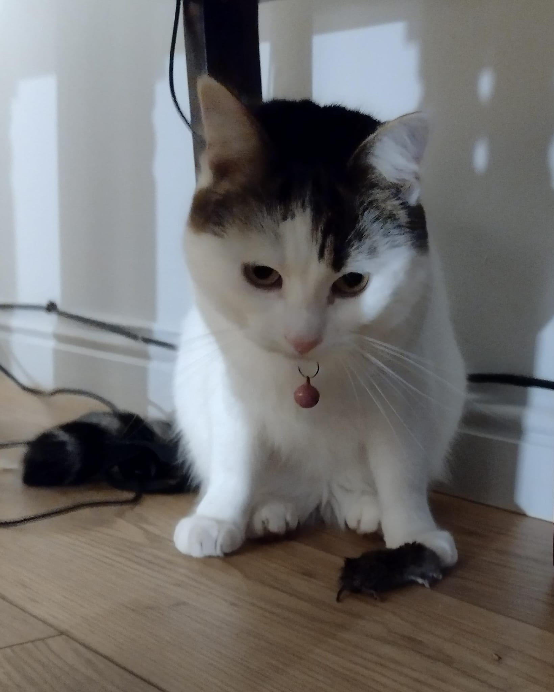
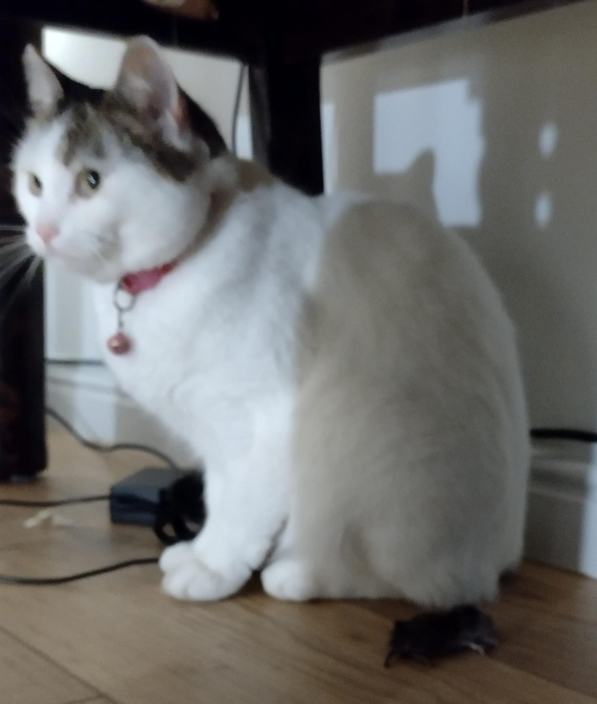
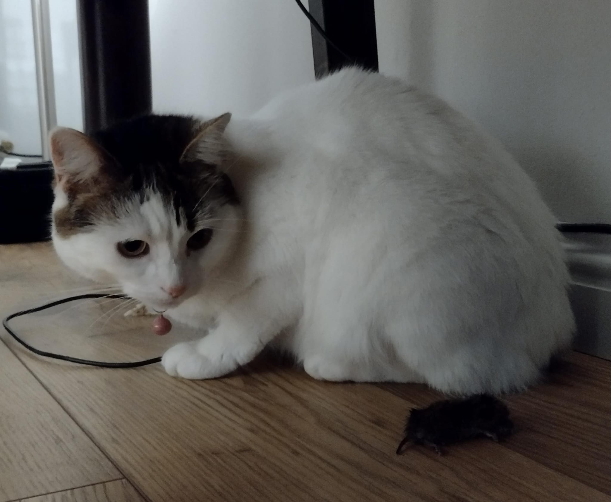
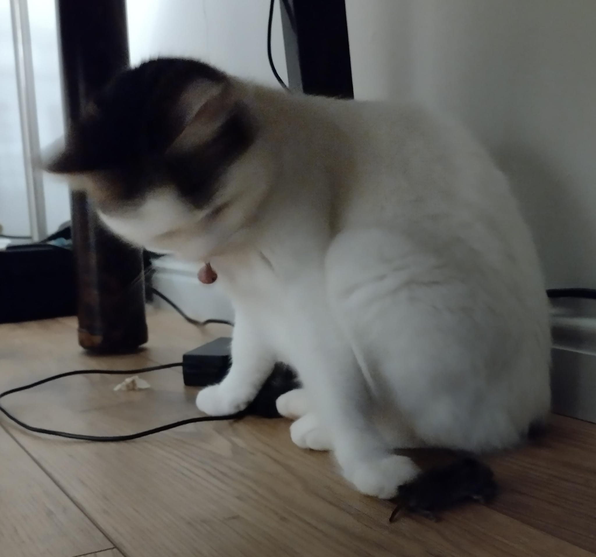
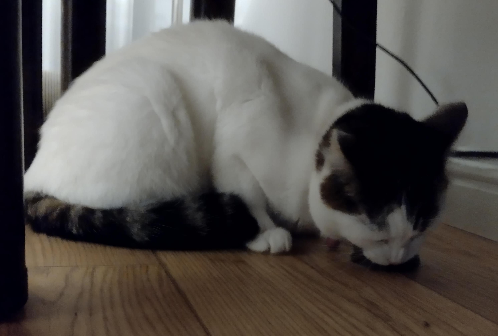
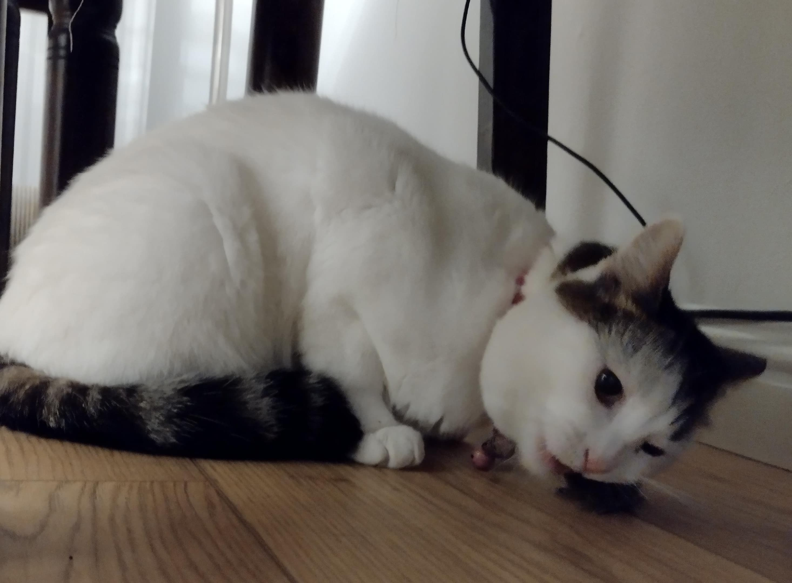
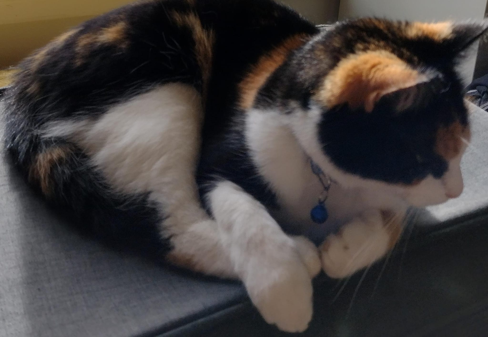
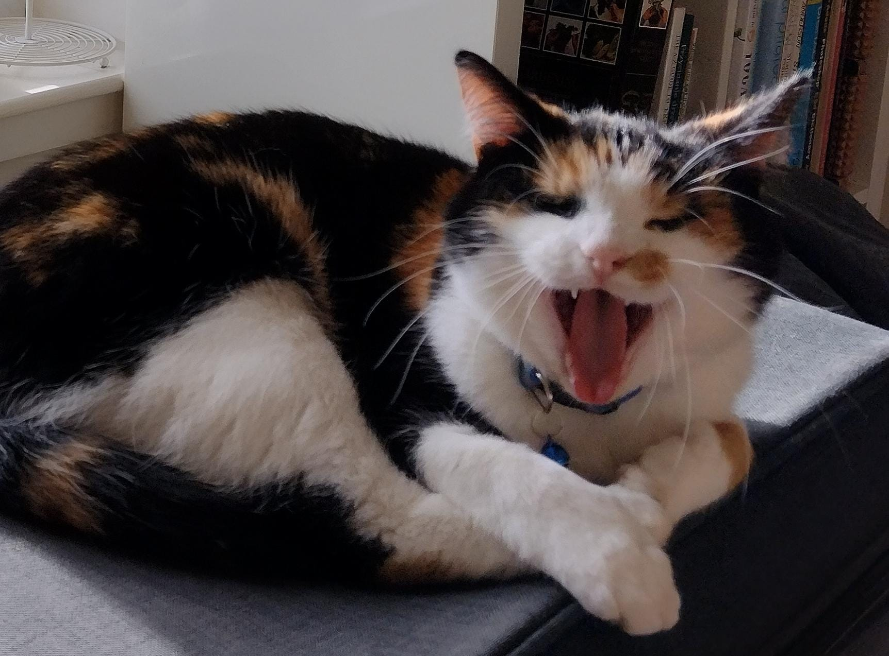

A teraz coś z zupełnie tej samej beczki!
A teraz coś z zupełnie tej samej beczki!
 Ależ Myszko nie jesteś sama,
 W przyszłość patrzeniu daremnym;
 Najlepsze plany myszy i ludzi
 Idą w diabły,
 A dla nas nic tylko żal i ból,
 Zamiast radości obiecanej!
 To jest... To była ryjówka...
A teraz coś z zupełnie tej samej beczki!
 Panie i panowie! Sir Billy Connolly!!!
Dzięki, Mortka!
Małysz, świetnie! Teraz moja kolej!
W całości. Po szkocku!.